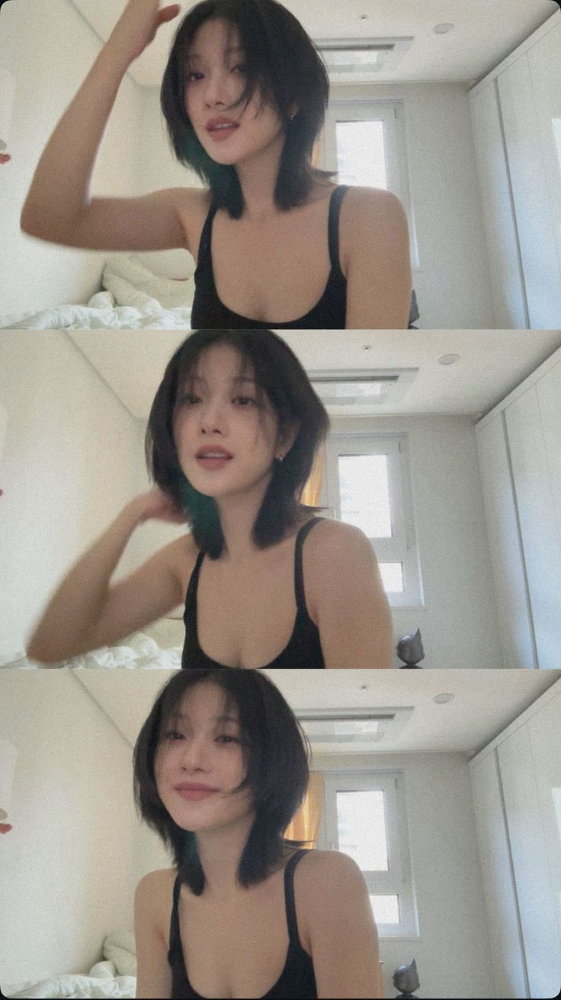
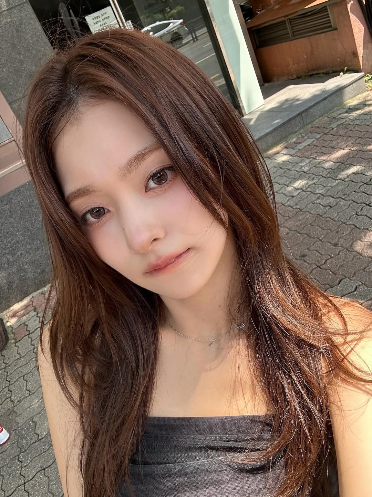
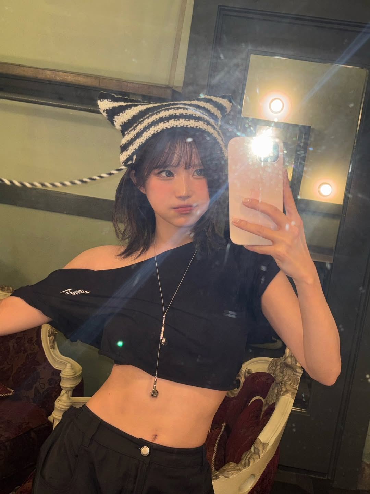
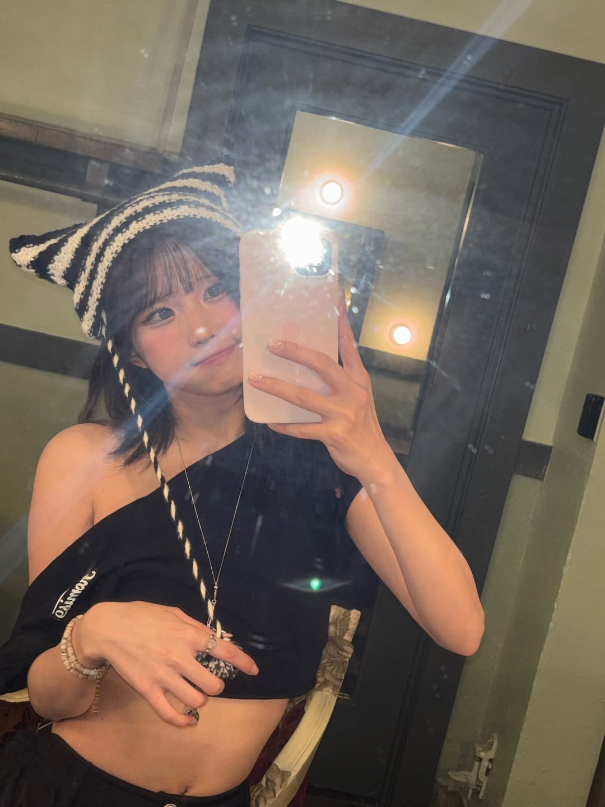
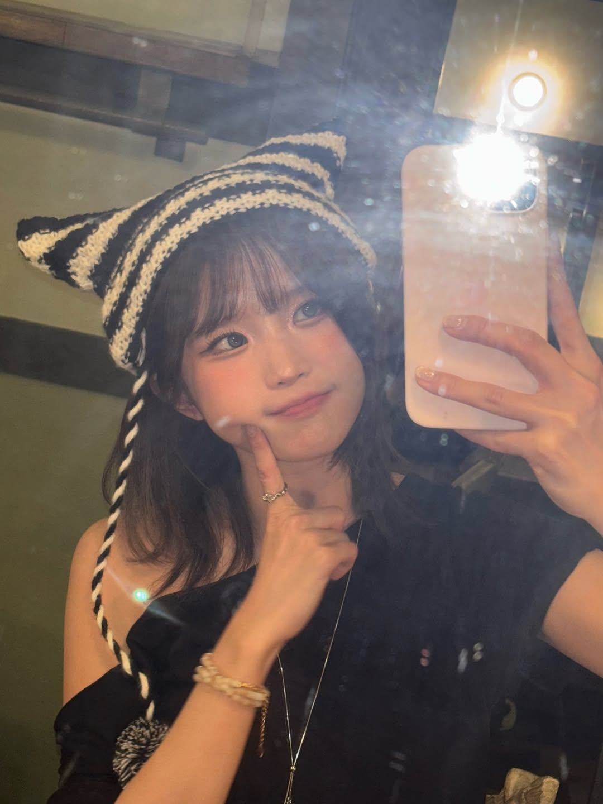
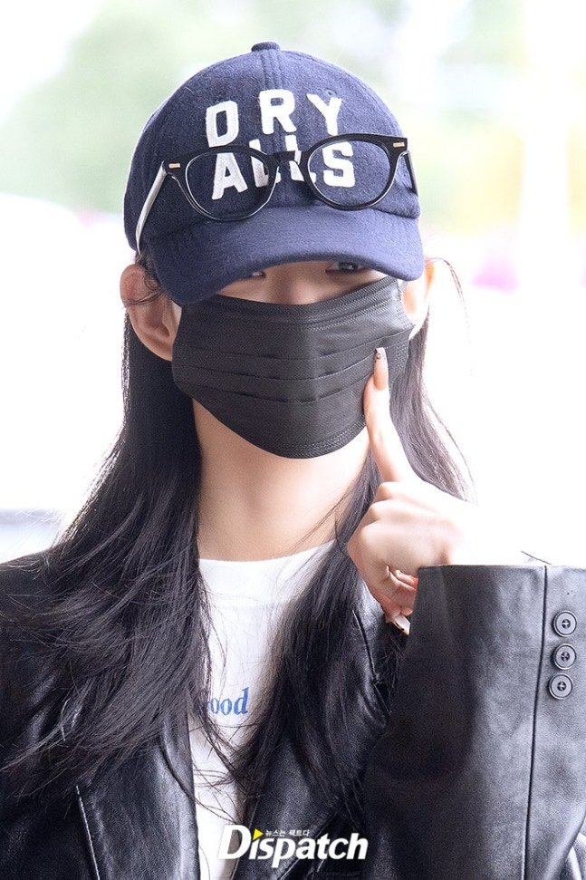

fromis_9(프로미스나인)은 2017년 Mnet 《아이돌학교》를 통해 결성된 걸그룹으로, 그룹명에는 ‘아이돌학교에서 시작된 그룹(from idol school)’과 ‘멤버들이 팬들과의 약속(promise)을 지킨다’는 의미가 담겨 있다. 2024년 12월 플레디스 엔터테인먼트와의 계약이 종료된 후, 2025년 1월 ASND와 전속계약을 체결하며 새로운 소속사에서 활동을 이어가고 있다. 그룹명은 Pledis와 ASND 간 협의를 통해 그대로 사용하기로 결정되었다. 현재 멤버는 송하영, 박지원, 이나경, 이채영, 백지헌 총 5명으로, 장규리는 2022년 계약 만료와 함께 그룹을 떠났으며, 이새롬·이서연·노지선은 2024년 말 계약 종료 이후 탈퇴했다. 프로미스나인은 2025년 6월 25일, 5인 체제 첫 미니앨범 《From Our 20’s》를 발매하며 새 출발을 알렸다. 타이틀곡은 〈Like You Better〉로, 음악방송과 다양한 활동을 통해 팬들과의 만남을 이어가고 있다.

fromis_9


- highlight
- photo
- Artist
- photo Letter
- Media
- LIVE
- Notice
-
shop

Highlight






photo
사진 관련 콘텐츠입니다.
Artist
송하영
박지원
이나경

이채영
백지헌
photo Letter
팬레터 게시판 내용입니다.
Media
영상, 사진 자료실입니다.
LIVE
실시간 방송/라이브 관련입니다.
Notice
공지사항입니다.
Shop
굿즈샵 안내입니다.